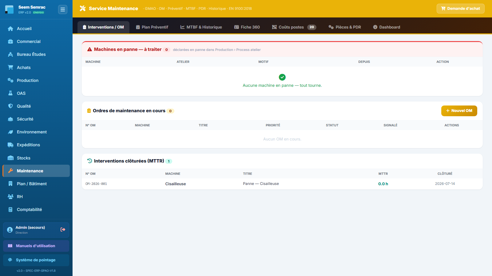
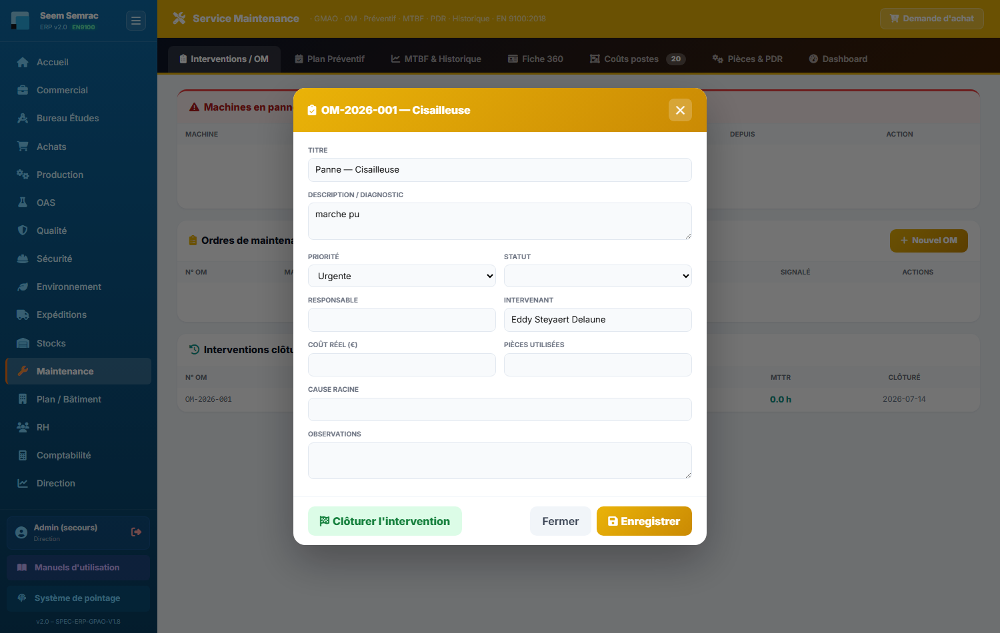
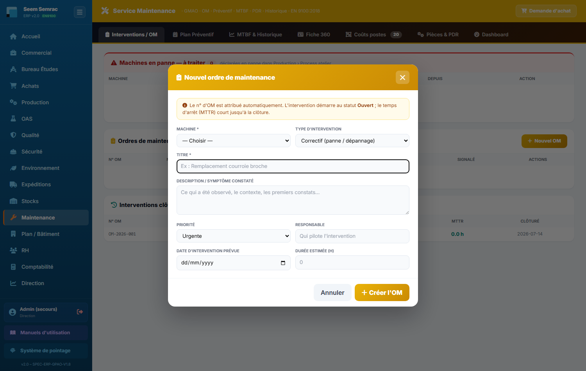
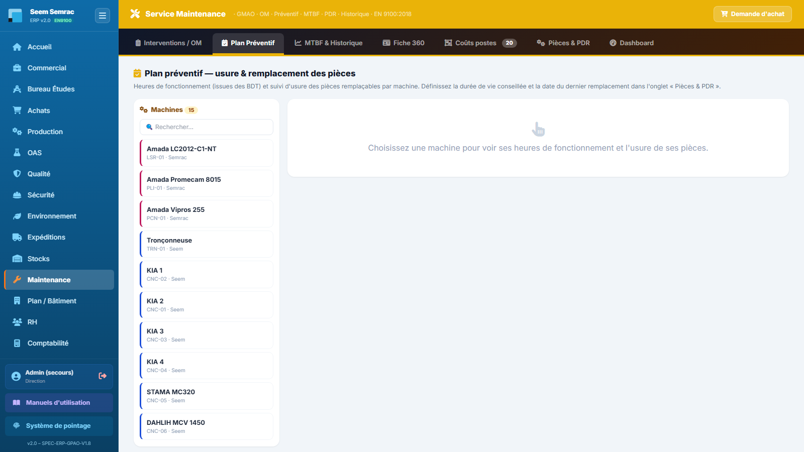
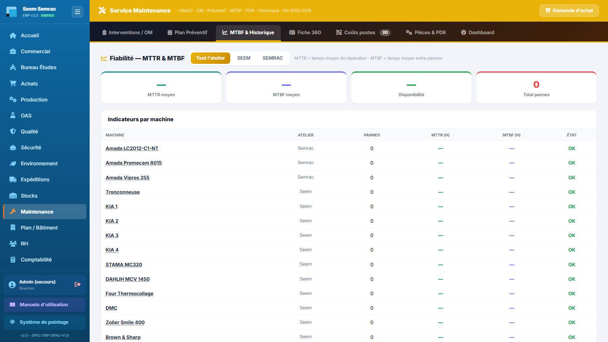
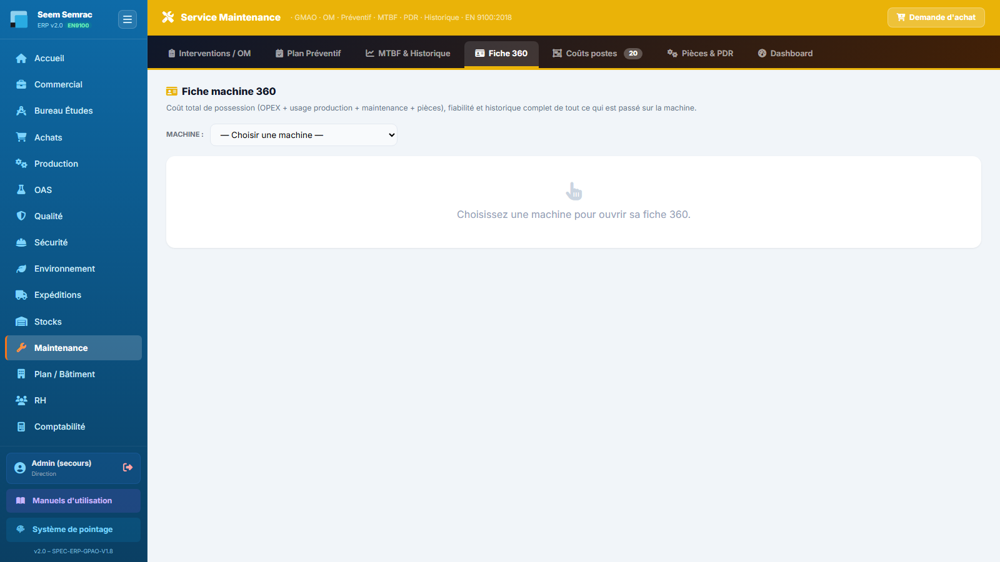
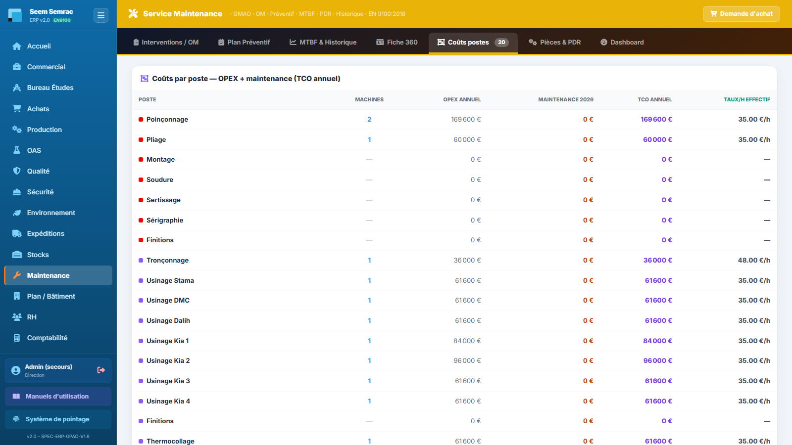
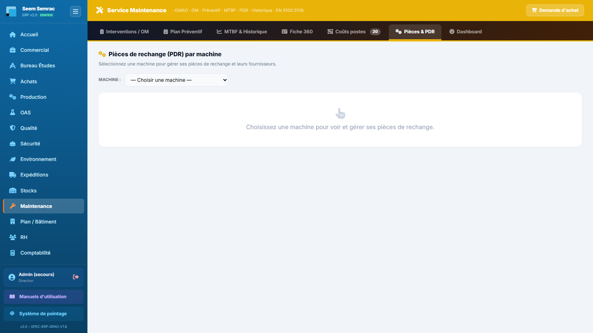
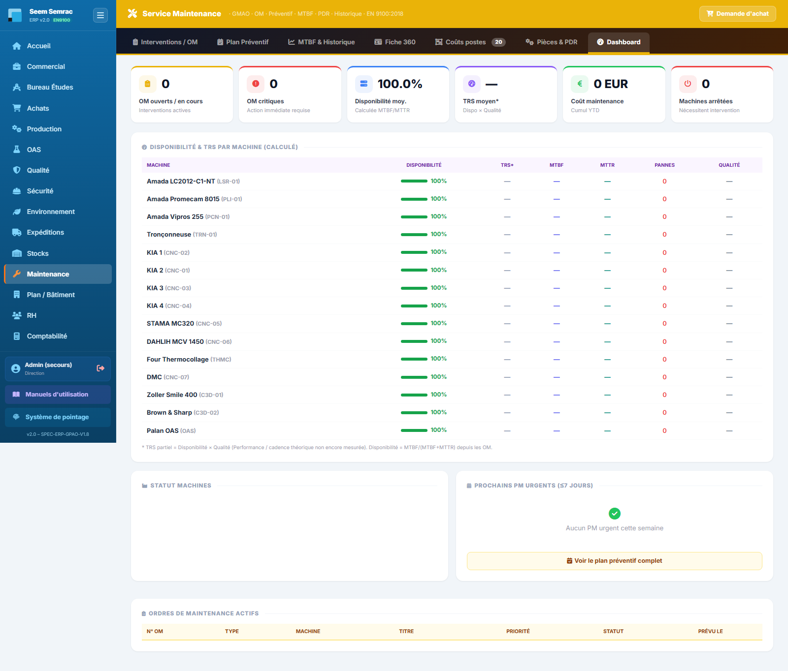

Le service Maintenance est la GMAO de l'atelier : il recueille les pannes déclarées en Production, les transforme en ordres de maintenance (OM), surveille l'usure des pièces à partir des heures réellement tournées par chaque machine, mesure la fiabilité (MTTR, MTBF, disponibilité, TRS) et chiffre ce que coûte chaque machine et chaque poste de travail. Ce manuel décrit les 7 onglets, écran par écran.
👤 Pour qui : Technicien(ne) maintenance (écriture — avec la Direction · lecture : BE, Achats, Production, OAS, Qualité)🧭 Dans l'ERP : Sidebar → Maintenance🗂 7 onglets
1
Interventions / OM
À quoi ça sert. C'est l'écran de travail quotidien du technicien. Il réunit sur une seule page les machines déclarées en panne par l'atelier, les ordres de maintenance en cours et l'historique des interventions clôturées. Un OM est la trace complète d'une intervention : qui, quoi, combien de temps, combien ça a coûté, quelle cause racine. C'est aussi lui qui alimente tous les indicateurs de fiabilité du service (MTTR, MTBF, disponibilité) et le coût maintenance des machines et des postes.
Ce que vous voyez
Le bandeau jaune du service rappelle le titre « Service Maintenance » et sa signature GMAO · OM · Préventif · MTBF · PDR · Historique · EN 9100:2018. À droite du bandeau, le bouton « Demande d'achat » permet de commander une pièce sans quitter la GMAO. Juste en dessous, la barre des sept onglets ; certains portent un compteur (nombre d'OM ouverts sur « Interventions / OM », nombre de pièces sur « Pièces & PDR », nombre de postes actifs sur « Coûts postes »).

Service Maintenance — le bandeau jaune, la barre des sept onglets avec leurs compteurs, et le bouton « Demande d'achat » en haut à droite.
L'onglet lui-même empile trois blocs, du plus urgent au plus froid :
Machines en panne — à traiter (cadre rouge, avec le nombre de machines concernées). La mention « déclarées en panne dans Production › Process atelier » rappelle d'où vient l'information. Colonnes : Machine (nom + code), Atelier (Seem ou Semrac), Motif, Depuis (« aujourd'hui » ou nombre de jours), Action. La colonne Action affiche soit le bouton jaune « Créer un OM », soit — si un OM est déjà ouvert sur cette machine — la mention « OM-…-… en cours ». Quand rien n'est en panne, le bloc affiche « Aucune machine en panne — tout tourne. »
Ordres de maintenance en cours. Colonnes : N° OM, Machine, Titre, Priorité, Statut, Signalé (date), Actions (boutons « Ouvrir » et « Clôturer »).
Interventions clôturées (MTTR) — les 30 dernières. Colonnes : N° OM, Machine, Titre, MTTR (durée réelle de l'intervention, en heures), Clôturé (date).
Priorité : normal · urgent · critique.
Statut d'un OM : Ouvert (signalé, pas encore pris en main) · En cours (intervention démarrée) · En attente (bloqué, typiquement faute de pièce) · Terminé · Annulé.

Interventions / OM — les trois blocs empilés : machines en panne (en rouge), OM en cours, interventions clôturées. Ici une journée sans panne : « tout tourne ».
Pas à pas — ouvrir un OM sur une machine en panne
La panne se déclare d'abord en Production (onglet « Process Ateliers ») : la machine passe en arrêt avec un motif. Elle apparaît alors seule dans le bloc rouge, en haut de cet onglet.
Cliquez sur « Créer un OM » sur la ligne de la machine.
L'ERP crée l'ordre : numéro automatique OM-AAAA-NNN, type correctif, priorité urgente, statut Ouvert, titre « Panne — nom de la machine » et description reprise du motif de panne. Une notification confirme le numéro créé.
L'OM apparaît immédiatement dans le bloc « Ordres de maintenance en cours », et la ligne de la machine en panne affiche désormais « OM-… en cours » à la place du bouton.
Bon à savoir : l'horodatage exact de la panne est conservé comme début de l'intervention. Le MTTR se calcule donc sur le temps réellement subi par l'atelier (panne → remise en service), pas sur le temps passé la clé à la main.
Pas à pas — créer un OM vous-même (sans passer par une panne)
Toute intervention ne naît pas d'un arrêt machine : un bruit suspect, une fuite, un réglage à reprendre, un graissage à planifier. Le bouton « Nouvel OM », en haut à droite du bloc « Ordres de maintenance en cours », ouvre un formulaire de saisie complet.
Cliquez sur « Nouvel OM ».
Choisissez la machine concernée (obligatoire) : la liste indique le code et le site, et signale « — EN PANNE » les machines actuellement à l'arrêt.
Choisissez le type d'intervention : Correctif (panne, dépannage — l'intervention est réputée commencée tout de suite) ou Préventif (planifié : le chronomètre ne démarre qu'au moment de l'intervention réelle).
Saisissez un titre court et parlant (obligatoire), par exemple « Remplacement courroie broche », puis la description : ce que vous avez constaté, dans quel contexte.
Réglez la priorité (Normale / Urgente / Critique — cette dernière signalant un arrêt de production) et indiquez le responsable qui pilote l'intervention (la liste des salariés est proposée à la saisie).
Pour une intervention planifiée, renseignez la date d'intervention prévue et la durée estimée en heures. Ces deux champs sont facultatifs.
Validez par « Créer l'OM » : le numéro OM-AAAA-NNN est attribué automatiquement, l'ordre part au statut Ouvert et apparaît aussitôt dans la liste des interventions en cours.

Nouvel ordre de maintenance — machine et titre sont les deux seuls champs obligatoires ; le type choisi (correctif ou préventif) détermine le point de départ du calcul du temps d'arrêt.
Astuce : réservez la priorité Critique aux cas qui bloquent réellement la production — c'est elle qui fait remonter l'intervention en tête des urgences et dans les indicateurs de la Direction.
Pas à pas — renseigner et suivre une intervention
Sur la ligne de l'OM, cliquez sur « Ouvrir » : la fenêtre de l'ordre de maintenance s'ouvre, son titre rappelant le numéro d'OM et la machine.
Complétez le diagnostic, la priorité, le responsable et l'intervenant (les deux champs proposent la liste des salariés), les pièces utilisées, le coût réel, la cause racine et vos observations (voir le tableau ci-dessous).
Passez le statut à En cours dès que vous intervenez, ou à En attente si vous êtes bloqué par une pièce à commander.
Cliquez sur « Enregistrer » : l'ERP confirme « OM enregistré (sans clôture) » — la machine reste en arrêt et l'OM reste ouvert.
Pas à pas — clôturer une intervention
Renseignez d'abord le coût réel, les pièces utilisées, l'intervenant, la cause racine et les observations : à la clôture, ces informations sont enregistrées avec l'OM.
Cliquez sur « Clôturer l'intervention » (dans la fenêtre de l'OM) ou sur « Clôturer » (directement sur la ligne). Une confirmation apparaît : « Clôturer cette intervention ? La machine sera remise en service et le MTTR calculé. »
Validez. L'OM passe en Terminé, sa durée est calculée et affichée dans la notification (« Intervention clôturée — MTTR X,X h »).
La machine repasse automatiquement en état opérationnel : le motif et la date de panne sont effacés. Elle redevient disponible au planning de Production et repasse au vert sur la maquette du bâtiment.
L'intervention descend dans le bloc « Interventions clôturées (MTTR) » et son coût vient alimenter la Fiche 360 de la machine et les Coûts postes.
La fiche d'intervention (bouton « Ouvrir »), champ par champ
Il s'agit ici de la fiche d'une intervention déjà créée — celle que vous complétez au fil du dépannage. À ne pas confondre avec le formulaire de création décrit plus haut.
Champ
Saisie
Obligatoire
Explication
Titre
Texte
Recommandé
Intitulé court de l'intervention (prérempli « Panne — machine » sur un OM créé depuis une panne).
Description / diagnostic
Texte libre
Non
Ce qui a été constaté ; prérempli avec le motif de panne saisi en Production.
Priorité
Normale / Urgente / Critique
Oui (Urgente par défaut sur une panne)
Une priorité critique alimente la tuile « OM critiques » du Dashboard.
Statut
Ouvert / En cours / En attente
Oui
« En attente » sert aux interventions suspendues faute de pièce de rechange. La clôture ne se fait pas ici mais par le bouton dédié.
Responsable
Texte (liste des salariés)
Non
Qui pilote l'intervention.
Intervenant
Texte (liste des salariés)
Non
Qui a réellement effectué le travail.
Coût réel (€)
Nombre
Non (mais fortement conseillé)
Coût de l'intervention : c'est la seule source du coût maintenance dans la Fiche 360, les Coûts postes et le Dashboard.
Pièces utilisées
Texte
Non
Pièces consommées ; à répercuter ensuite sur le stock PDR de la machine.
Cause racine
Texte
Non
Pourquoi la panne est arrivée — la matière première des actions de fond et des 8D côté Qualité.
Observations
Texte libre
Non
Commentaire de fin d'intervention, consignes, points à surveiller.
Règles & points d'attention
Une machine ne se déclare pas en panne depuis la Maintenance : la déclaration se fait en Production, onglet « Process Ateliers ». La Maintenance prend le relais dès que la machine apparaît dans le bloc rouge.
Une seule ligne « Créer un OM » par machine : dès qu'un OM non clos existe sur la machine, le bouton disparaît au profit de son numéro. Cela évite les doublons d'ordres sur la même panne.
Le coût réel est la donnée la plus stratégique de l'écran : sans lui, le TCO de la machine et le coût du poste restent faux, et le prix de revient calculé en Production est sous-estimé.
Le numéro d'OM est attribué par l'ERP (OM-AAAA-NNN) : ne le saisissez jamais à la main.
Attention : la clôture d'un OM remet la machine en service sans autre contrôle. Ne clôturez qu'une fois la machine réellement apte à produire : le planning de Production la considérera immédiatement comme disponible.
Astuce : s'il manque une pièce, passez l'OM en « En attente » et utilisez le bouton « Demande d'achat » du bandeau : la demande part directement au service Achats, qui la transformera en bon de commande fournisseur.
2
Plan Préventif
À quoi ça sert. Anticiper la casse plutôt que la subir. Cet onglet suit, machine par machine, les heures de fonctionnement réellement tournées — déduites des bons de travail (BDT) de la Production — et les compare à la durée de vie conseillée de chaque pièce remplaçable. Vous voyez d'un coup d'œil quelle pièce a consommé son capital d'heures, et laquelle est à changer maintenant.
Ce que vous voyez
Le titre « Plan préventif — usure & remplacement des pièces » et son rappel : les heures viennent des BDT, la durée de vie et la date du dernier remplacement se définissent dans l'onglet « Pièces & PDR ». L'écran est en deux volets.
À gauche, la liste des machines avec leur compteur et un champ « Rechercher… ». Chaque vignette porte le nom de la machine, son code et son atelier ; un liseré coloré rappelle le site (bleu pour Seem, rose pour Semrac).
À droite, tant qu'aucune machine n'est choisie : « Choisissez une machine pour voir ses heures de fonctionnement et l'usure de ses pièces. »
Une fois la machine sélectionnée, trois tuiles : Heures tournées (année), Heures totales (BDT) et Pièces à remplacer (le nombre de pièces dont la durée de vie est dépassée).
En dessous, le tableau « Pièces remplaçables — usure & échéance » : Pièce, Référence, Durée de vie, Dernier rempl., Utilisé depuis (heures machine cumulées depuis le dernier remplacement), Restant avant rempl., Usure (barre de progression en %) et un bouton d'action.
Codes couleur de la barre d'usure : vert jusqu'à 80 % · orange à partir de 80 % · rouge à 100 %, la colonne « Restant » affichant alors À REMPLACER. Une pièce sans durée de vie renseignée affiche « durée de vie ? » et un bouton « définir ».

Plan Préventif — la liste des machines à gauche (liseré bleu = Seem, rose = Semrac) ; le détail d'usure s'affiche à droite dès qu'une machine est choisie.
Pas à pas — vérifier l'usure d'une machine
Cliquez sur la machine dans la liste de gauche (ou tapez son nom dans « Rechercher… » pour filtrer la liste).
Lisez les trois tuiles : les heures de l'année en cours, les heures totales depuis toujours, et le nombre de pièces déjà à remplacer.
Parcourez le tableau : les barres orange annoncent les remplacements du mois à venir, les rouges sont à traiter tout de suite.
Si une pièce affiche « durée de vie ? », cliquez sur « définir » et saisissez le nombre d'heures de fonctionnement avant remplacement conseillé (donnée du constructeur ou retour d'expérience). Le suivi d'usure démarre aussitôt.
Pas à pas — enregistrer un remplacement de pièce
Après avoir changé la pièce, cliquez sur le bouton vert en fin de ligne (« Marquer la pièce remplacée »).
Confirmez : « Marquer cette pièce remplacée aujourd'hui ? Le compteur d'usure repart à zéro. »
La date du jour devient le nouveau dernier remplacement ; la colonne « Utilisé depuis » revient à zéro et la barre d'usure redevient verte.
Pensez à décrémenter le stock de la pièce dans l'onglet « Pièces & PDR », et à rattacher l'intervention à un OM si elle a immobilisé la machine.
Règles & points d'attention
Les heures affichées sont le temps machine alloué des BDT (issu de la gamme définie à l'analyse DT), pas un compteur physique lu sur la machine. Une gamme mal renseignée en Bureau d'Études fausse donc le préventif.
Seules les pièces déclarées remplaçables apparaissent ici ; les consommables non suivis restent dans « Pièces & PDR ».
Si aucune date de dernier remplacement n'est renseignée, l'usure est comptée depuis l'origine des heures machine — d'où l'intérêt de saisir cette date dès la création de la pièce.
Automatisme : à chaque ouverture du service Maintenance, l'ERP passe en revue le préventif et crée tout seul les OM échus, sans doublon : d'une part les plans calendaires dont la date prévue est atteinte (le plan est ensuite avancé à la prochaine échéance), d'autre part les pièces en fin de vie (heures machine cumulées ≥ durée de vie), avec un OM « Remplacement pièce — … ». Vous les retrouvez dans l'onglet « Interventions / OM », en type préventif.
Astuce : renseignez la durée de vie et la date du dernier remplacement de chaque pièce critique dès sa création : c'est le seul travail de saisie du préventif — ensuite, l'ERP ouvre les OM tout seul au bon moment.
3
MTBF & Historique
À quoi ça sert. Mesurer la fiabilité du parc machines. Deux indicateurs, calculés automatiquement à partir des OM : le MTTR (temps moyen de réparation — combien de temps une machine reste immobilisée) et le MTBF (temps moyen entre deux pannes — à quelle fréquence elle tombe). C'est l'écran qui permet de désigner les machines à fiabiliser en priorité, et de justifier un investissement ou un contrat de maintenance.
Ce que vous voyez
En haut, le titre « Fiabilité — MTTR & MTBF », trois pastilles de filtre Tout l'atelier · SEEM · SEMRAC, et le rappel « MTTR = temps moyen de réparation · MTBF = temps moyen entre pannes ». Quatre tuiles suivent : MTTR moyen (en heures), MTBF moyen (en jours), Disponibilité (en %) et Total pannes. En dessous, le tableau « Indicateurs par machine » : Machine (nom souligné, cliquable), Atelier, Pannes, MTTR (h), MTBF (h), État.
État de la machine : OK (opérationnelle) · Maintenance · En panne.
Le MTBF s'affiche en heures tant qu'il reste court, et bascule en jours au-delà de 48 h — plus lisible pour un parc fiable.
Un tiret « — » signifie que l'indicateur n'est pas calculable : le MTTR demande au moins une intervention clôturée, le MTBF au moins deux pannes signalées.
La disponibilité est le rapport MTBF / (MTBF + MTTR) : la part du temps où la machine est apte à produire.

MTBF & Historique — les quatre tuiles résument le parc filtré ; dans le tableau, chaque nom de machine souligné ouvre sa Fiche 360.
Pas à pas — analyser la fiabilité d'un atelier
Choisissez le périmètre avec les pastilles : Tout l'atelier, SEEM ou SEMRAC. Les quatre tuiles et le tableau se recalculent instantanément.
Triez votre lecture par la colonne Pannes : les machines qui tombent le plus souvent sont vos candidates au préventif renforcé.
Comparez ensuite MTTR et MTBF : un MTTR élevé signale un problème de pièces de rechange ou de compétence disponible ; un MTBF faible signale une machine réellement fragile ou mal entretenue.
Cliquez sur le nom d'une machine : l'ERP bascule sur sa Fiche 360, déjà chargée, pour comprendre l'historique complet.
Règles & points d'attention
Ces indicateurs ne valent que ce que valent les OM : une panne réparée sans OM n'existe pas pour la GMAO, et une intervention non clôturée n'entre pas dans le MTTR.
Le MTBF se calcule sur l'écart entre les dates de signalement des pannes successives : il ne devient significatif qu'après plusieurs incidents sur la même machine.
Une machine qui n'a jamais eu d'OM est considérée comme disponible à 100 % — c'est normal, mais ce n'est pas une preuve de fiabilité tant qu'elle n'a pas d'historique.
Astuce : avant une revue de direction, filtrez sur chaque site et notez les trois machines au plus faible MTBF : c'est le format d'argumentaire le plus court pour obtenir un budget de fiabilisation.
4
Fiche 360
À quoi ça sert. Tout savoir d'une machine sur un seul écran : ce qu'elle coûte (coût total de possession), ce qu'elle vaut en fiabilité, ce qui est passé dessus en production et tout ce qu'on lui a fait comme maintenance. C'est la fiche que l'on ouvre avant un arbitrage — réparer ou remplacer, sous-traiter ou investir — et celle que l'on montre en audit pour prouver la traçabilité du moyen de production.
Ce que vous voyez
Un menu déroulant « Machine : » en haut ; tant qu'aucune machine n'est choisie, l'écran invite à en sélectionner une. Une fois la machine choisie, la fiche se déploie :
Un bandeau d'identité : nom et code de la machine, atelier, année en cours, et une pastille d'état — Opérationnel · En maintenance · En panne.
Une première rangée de tuiles coûts : TCO de l'année (OPEX + maintenance), OPEX annuel (avec le taux horaire de la machine), Maintenance de l'année (avec le nombre d'OM, dont les ouverts), Coût absorbé prod. (heures BDT × taux horaire) et Valeur PDR stock (nombre de pièces, et combien sont sous le stock mini).
Une seconde rangée de tuiles fiabilité : Disponibilité, TRS*, MTTR, MTBF, Pannes, Heures machine et SPC cotes (part de relevés de cotes conformes, issus des contrôles Qualité).
Deux tableaux côte à côte : Historique de production — ce qui est passé sur la machine (Date, Opération, Pièce, Client, Temps, Résultat) — et Maintenance, avec le cumul dépensé en titre (OM, Intervention, Date, Coût).

Fiche 360 — tout part du menu « Machine : » ; la fiche complète (coûts, fiabilité, historiques) s'affiche dès la sélection.
Pas à pas — instruire un arbitrage « réparer ou remplacer »
Sélectionnez la machine dans le menu « Machine : ».
Comparez la tuile Maintenance de l'année à la tuile OPEX annuel : quand la maintenance approche le coût d'exploitation, la machine est en fin de vie économique.
Regardez la Disponibilité et le nombre de Pannes : une machine peu chère mais souvent arrêtée coûte surtout des retards de livraison.
Vérifiez le Coût absorbé prod. et les Heures machine : une machine peu chargée ne justifie pas un investissement de remplacement — elle justifie plutôt un redéploiement.
Parcourez le tableau Maintenance pour repérer les interventions répétitives (même titre, même cause) : c'est souvent là que se cache le vrai défaut à traiter.
Règles & points d'attention
Les heures machine comptabilisent uniquement le temps machine issu de la gamme (analyse DT), pas le temps homme : elles ne se comparent pas aux heures de présence des opérateurs.
Le coût absorbé production (heures × taux) est un indicateur de charge, il n'entre pas dans le TCO — sinon la machine serait comptée deux fois.
Le TRS affiché est partiel : c'est Disponibilité × Qualité. La composante Performance (cadence réelle rapportée à la cadence théorique) n'est pas encore mesurée — d'où l'astérisque.
L'historique de production affiche les derniers passages, et le bloc maintenance les derniers OM : pour l'exhaustivité comptable, appuyez-vous sur les tuiles, qui portent les cumuls.
Astuce : depuis la maquette du bâtiment (service Plan / Bâtiment), cliquer un repère de machine ouvre directement sa Fiche 360 — pratique en réunion devant le plan de l'atelier. Le nom des machines du tableau « MTBF & Historique » y mène aussi en un clic.
5
Coûts postes
À quoi ça sert. Voir le coût de l'atelier non plus machine par machine, mais poste de travail par poste de travail — un poste regroupant plusieurs machines. L'onglet additionne, pour chaque poste, l'OPEX annuel de ses machines et le coût des OM de ces mêmes machines, pour donner le TCO annuel du poste. C'est le chaînon entre la maintenance et le prix de revient : le taux horaire du poste sert directement au calcul du coût de revient unitaire des pièces.
Ce que vous voyez
Une seule carte, « Coûts par poste — OPEX + maintenance (TCO annuel) », avec un tableau dont chaque ligne est un poste actif :
Poste — le nom, précédé de la pastille de couleur du poste (la même qu'au planning de Production).
Machines — combien de machines composent le poste.
OPEX annuel — le coût d'exploitation annuel cumulé des machines du poste (valeur réelle si elle a été saisie, sinon estimation à partir du taux horaire et de la capacité).
Maintenance année en cours — le cumul des coûts réels des OM des machines du poste sur l'exercice.
TCO annuel — la somme des deux colonnes précédentes.
Taux/h effectif — le taux horaire qui alimente le coût de revient, en €/h. La mention manuel signale un taux forcé à la main ; la mention « dont +X achats » signale la part provenant des achats machine reçus dans l'année.
Une ligne TOTAL POSTES en bas récapitule l'OPEX, la maintenance et le TCO de tout l'atelier.
Si aucun poste n'est défini, l'écran renvoie vers Production → onglet Machines → « Postes de travail », où les postes se créent.

Coûts postes — l'onglet se situe entre « Fiche 360 » et « Pièces & PDR » ; son compteur indique le nombre de postes actifs pris en compte.
Pas à pas — contrôler le coût d'un poste
Repérez la ligne du poste concerné et lisez son nombre de machines : un poste sans machine rattachée n'a ni OPEX ni taux (colonnes à « — »).
Comparez Maintenance et OPEX annuel : une maintenance qui pèse lourd face à l'OPEX signale un poste à fiabiliser.
Vérifiez le Taux/h effectif : c'est lui qui est facturé au prix de revient. S'il porte la mention « manuel », le taux a été forcé en Production — assurez-vous qu'il est toujours d'actualité.
En cas d'écart, corrigez à la source : le rattachement des machines aux postes et le taux se règlent en Production, les coûts d'intervention se corrigent dans l'OM concerné (onglet « Interventions / OM »).
Règles & points d'attention
L'agrégation est exactement la même qu'en Production : les deux services doivent afficher les mêmes chiffres. Un écart signale une donnée saisie deux fois ou un rattachement de machine incohérent.
Seuls les postes actifs sont listés ; un poste passé inactif disparaît du tableau et du total.
Une machine sans poste n'est comptée nulle part ici : elle n'apparaît que dans sa Fiche 360. Rattachez chaque machine à un poste pour que le TCO de l'atelier soit complet.
La colonne Maintenance ne retient que les OM de l'année civile en cours : elle repart à zéro au 1er janvier, contrairement au cumul affiché dans la Fiche 360.
Rappel : cet onglet est en consultation. Rien ne s'y saisit — tout vient des machines (Production), des OPEX et des OM.
6
Pièces & PDR
À quoi ça sert. Tenir le magasin des pièces de rechange (PDR), machine par machine : ce qu'on a, où c'est rangé, chez qui on le rachète, à quel prix, et à partir de quel seuil il faut recommander. C'est aussi ici que se règlent les deux paramètres qui font vivre le Plan Préventif : la durée de vie conseillée d'une pièce et la date de son dernier remplacement.
Ce que vous voyez
Le titre « Pièces de rechange (PDR) par machine », puis un menu déroulant « Machine : ». Tant qu'aucune machine n'est choisie, l'écran affiche « Choisissez une machine pour voir et gérer ses pièces de rechange. » Une fois la machine sélectionnée, deux blocs apparaissent :
Le formulaire « Ajouter une pièce de rechange » (voir le tableau champ par champ plus bas) et son bouton jaune « Ajouter la pièce ».
Le tableau « Pièces de rechange » avec son compteur : Désignation, Référence, Fournisseur, Prix, Stock (stock actuel / stock mini), Emplac. et un bouton corbeille pour supprimer la ligne.
Une pièce dont le stock est tombé au niveau du mini s'affiche en rouge, suivie d'un ⚠ : c'est le signal de réapprovisionnement.

Pièces & PDR — le magasin est organisé par machine : le menu « Machine : » conditionne tout l'écran.
Pas à pas — enregistrer une pièce de rechange
Choisissez la machine dans le menu « Machine : ».
Saisissez au minimum la Désignation (par exemple « Courroie trapézoïdale A38 ») — c'est le seul champ obligatoire.
Complétez la Référence, le Fournisseur (le champ propose les fournisseurs déjà utilisés sur d'autres pièces), le Prix unitaire, le Stock actuel, le Stock mini et l'Emplacement (magasin / casier).
Renseignez les deux champs sur fond jaune — Durée de vie conseillée (h) et Dernier remplacement — si la pièce doit être suivie en préventif.
Cliquez sur « Ajouter la pièce » : elle rejoint la liste de la machine et, si sa durée de vie est renseignée, apparaît immédiatement dans le tableau d'usure du Plan Préventif.
Le formulaire d'ajout, champ par champ
Champ
Saisie
Obligatoire
Explication
Machine
Menu déroulant
Oui
Sélectionné en haut de l'écran ; la pièce est toujours rattachée à une machine.
Désignation
Texte
Oui
Nom courant de la pièce, tel qu'on la demande au magasin.
Référence
Texte
Non
Référence constructeur ou fournisseur — utile pour recommander sans erreur.
Fournisseur
Texte (propositions)
Non
Chez qui la pièce se rachète ; les fournisseurs déjà saisis sont proposés automatiquement.
Prix unitaire (€)
Nombre
Non
Sert à valoriser le stock PDR affiché dans la Fiche 360 de la machine.
Stock actuel
Nombre
Non (0 par défaut)
Quantité réellement en magasin.
Stock mini
Nombre
Non (0 par défaut)
Seuil d'alerte : au-dessous ou à égalité, la ligne passe en rouge avec un ⚠.
Emplacement
Texte
Non
Magasin / casier — évite de chercher la pièce pendant que la machine est arrêtée.
Durée de vie conseillée (h)
Nombre
Non (obligatoire pour le préventif)
Heures de fonctionnement machine avant remplacement conseillé. Déclenche le suivi d'usure et, une fois atteinte, la création automatique d'un OM préventif.
Dernier remplacement
Date
Non (fortement conseillé)
Point de départ du compteur d'usure. Sans cette date, l'usure est comptée depuis l'origine des heures machine.
Règles & points d'attention
Une pièce ne se déplace pas d'une machine à l'autre : si la même référence sert sur deux machines, créez-la des deux côtés (chaque machine a son propre compteur d'usure).
Le stock PDR de cet onglet est indépendant du service Stocks : il ne se décrémente pas tout seul quand vous utilisez une pièce. Mettez le stock actuel à jour après chaque intervention.
Le prix unitaire × le stock donne la valeur PDR affichée dans la Fiche 360 : un prix laissé vide sous-évalue le stock immobilisé.
Attention : la suppression d'une pièce (bouton corbeille) est définitive, après une simple confirmation — son historique d'usure et sa date de dernier remplacement disparaissent avec elle.
Astuce : pour recommander une pièce sous le mini, utilisez le bouton « Demande d'achat » du bandeau : la demande arrive dans le service Achats, qui la transforme en demande de prix puis en bon de commande fournisseur.
7
Dashboard
À quoi ça sert. La photo du service en une page : combien d'interventions sont en cours, combien de machines sont à l'arrêt, quelle est la disponibilité du parc, combien la maintenance a coûté depuis le début de l'année, et quels entretiens préventifs tombent dans les sept jours. C'est l'écran d'ouverture de journée et l'écran de point hebdomadaire avec la Production.
Ce que vous voyez
Six tuiles en haut : OM ouverts / en cours (interventions actives), OM critiques (action immédiate requise), Disponibilité moy. (calculée MTBF/MTTR), TRS moyen* (Dispo × Qualité), Coût maintenance (cumul depuis le début de l'année) et Machines arrêtées.
Le tableau Disponibilité & TRS par machine (calculé) : Machine, Disponibilité (barre + %), TRS*, MTBF, MTTR, Pannes, Qualité. La disponibilité passe au vert au-dessus de 90 %, à l'orange entre 75 et 90 %, au rouge en dessous ; le TRS au vert au-dessus de 85 %, à l'orange entre 65 et 85 %, au rouge en dessous.
La carte Statut machines — une ligne par machine suivie, avec sa barre de disponibilité, son MTBF et son état : Opérationnel · En maintenance · Arrêt.
La carte Prochains PM urgents (≤ 7 jours) — les entretiens préventifs à venir, avec une pastille d'échéance (J-n à venir, Auj. aujourd'hui, J+n en retard), l'intitulé, la machine, le responsable et le type. Le bouton « Voir le plan préventif complet » bascule vers l'onglet Plan Préventif. Quand rien n'est dû : « Aucun PM urgent cette semaine ».
Le tableau Ordres de maintenance actifs (les 8 premiers) : N° OM, Type, Machine, Titre, Priorité, Statut, Prévu le. La date prévue est colorée selon l'urgence : rouge si l'échéance est dépassée, orange à 3 jours ou moins, ambre à 7 jours ou moins, vert au-delà.
Types d'OM identifiables par leur pastille : correctif, preventif, amelioratif, vgp (vérification générale périodique) et inspection.
Statuts affichés ici : Ouvert · En cours · En attente PDR · Terminé · Annulé.

Dashboard — les six tuiles, puis le tableau Disponibilité & TRS par machine ; en bas de page, le statut des machines, les préventifs de la semaine et les OM actifs.
Pas à pas — le point du lundi matin
Lisez d'abord les tuiles Machines arrêtées et OM critiques : si elles ne sont pas à zéro, commencez la journée par l'onglet « Interventions / OM ».
Balayez la carte Prochains PM urgents : toute pastille J+ est un préventif en retard — planifiez-le avec la Production avant qu'il ne devienne une panne.
Dans le tableau Disponibilité & TRS, repérez les lignes orange ou rouges : ce sont les machines qui pèsent sur la capacité de l'atelier.
Terminez par le tableau Ordres de maintenance actifs et traitez d'abord les dates « Prévu le » affichées en rouge.
Règles & points d'attention
Le coût maintenance affiché est un cumul depuis le début de l'année : il ne vaut que si le champ « coût réel » des OM est renseigné à chaque clôture.
Le TRS est partiel (Disponibilité × Qualité) : la composante Performance n'est pas encore mesurée. Ne le comparez pas tel quel à un TRS constructeur.
La colonne Qualité vient des passages de production enregistrés sur la machine : elle reste vide tant qu'aucun bon de travail n'a été soldé dessus.
Une machine sans aucun OM est portée à 100 % de disponibilité : la moyenne du parc est donc optimiste tant que l'historique de la GMAO est jeune.
Astuce : le vrai levier de ce tableau de bord n'est pas ici mais dans la saisie : un OM clôturé avec sa durée, son coût et sa cause racine fait progresser d'un coup la disponibilité mesurée, le TCO des machines et le coût des postes.